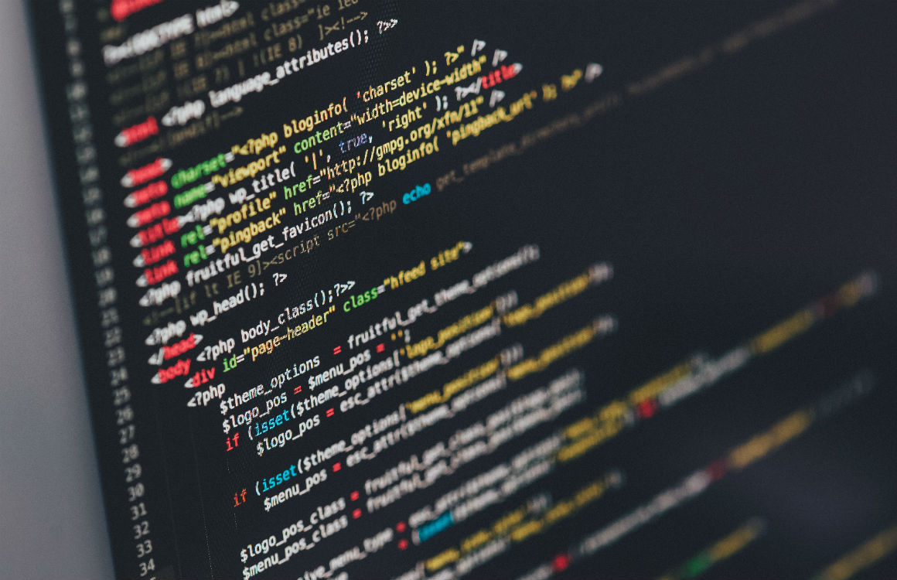

Mijn naam is Lucas. Ik ben 15 jaar oud en zit in A4a op het Augustinus.
Ik ben half Nederlands en half Spaans.
Ik probeerde altijd al een programmeer taal te leren, en een jaartje geleden begon ik met het leren van C#, HTML en CSS.
Hoewel ik niet zo goed was, ben ik wel steeds beter geworden.
Ik heb een paar keer geprobeert een website te maken op W3Schools en andere websites.
Voor ik naar het Augustinus ging zat ik op de Nassauschool in Groningen. Dat vond ik een best leuke school.
Ik heb gekozen voor het Augustinus omdat het mij een leuke school leek en ik de andere scholen niet zo leuk vond.
Als vakkenpakket heb ik gekozen voor Natuur en Techniek omdat ik houd van computers en ook een beetje van wetenschap.
Ik heb een paar vrienden op deze school waaronder Rev en Max.
Mijn hobby's zijn:
Het is al afgelopen hoor